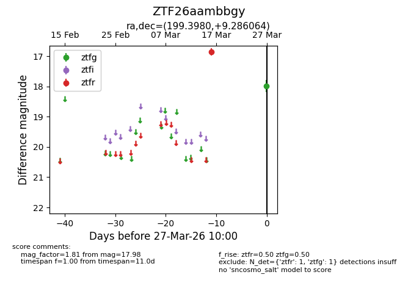
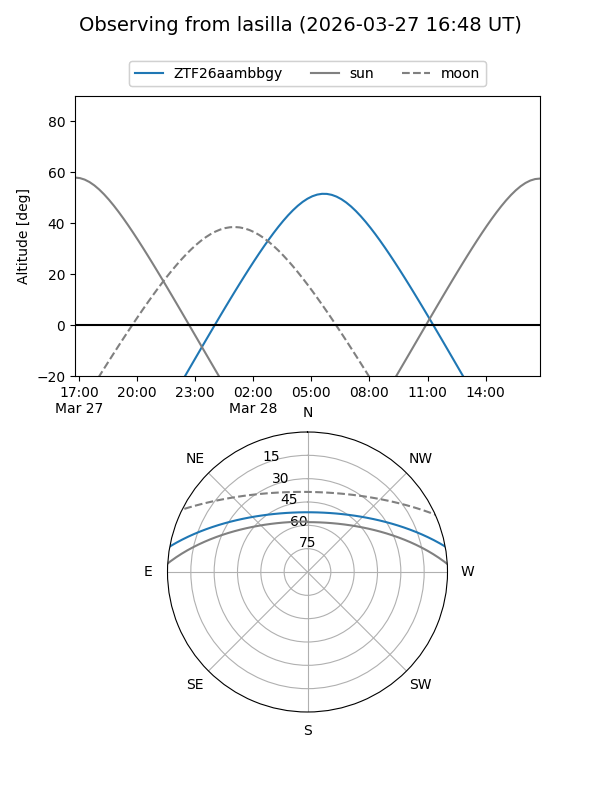
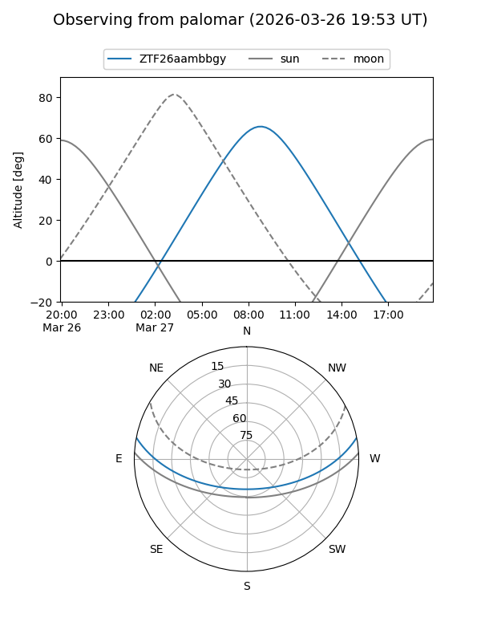

ZTF26aambbgy
Target ZTF26aambbgy at 2026-03-27 10:03
Aliases and brokers:
FINK: link
Lasair: link
ALeRCE: link
alt names
ZTF26aambbgy (ztf,fink_ztf)
Coordinates:
equatorial (ra, dec) = 199.3980,+9.28606
equatorial (HMS+DMS) = 13:17:35.52,+09:17:09.83
galactic (l, b) = (323.2522,+71.11869)
Flags:
Photometry:
last ztfg=17.98, ztfr=16.85
1 ztfg, 1 ztfr detections
Lightcurve

Visibility


Additional plots